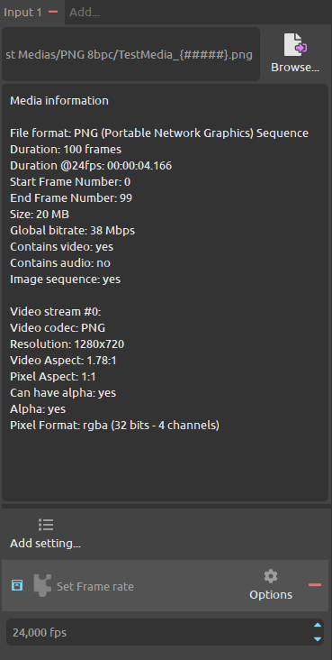

Transcoding from image sequences¶

To load image sequences as input medias in DuME, select or drag and drop a single image from the sequence. It can be any frame, not necessarily the first one. DuME automatically detects the complete sequence.
Do not forget to set the framerate of the sequence in the input panel.